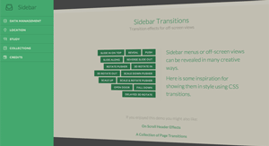

Matthew Greenberg
Latest stories
Your friends
Personal Settings
Security & Privacy
Open Menu
Previous Demo
Back to the Codrops Article
Off-Canvas Menu Effects
Showing (off-canvas) menus stylishly
Top Side
Side Slide
Corner Box
Nested Corner Box
Top Expand
Corner Morph
Elastic
Bubble
Wave
If you enjoyed this demo you might also like:

Transitions for Off-Canvas Navigations
Perspective Page View Navigation